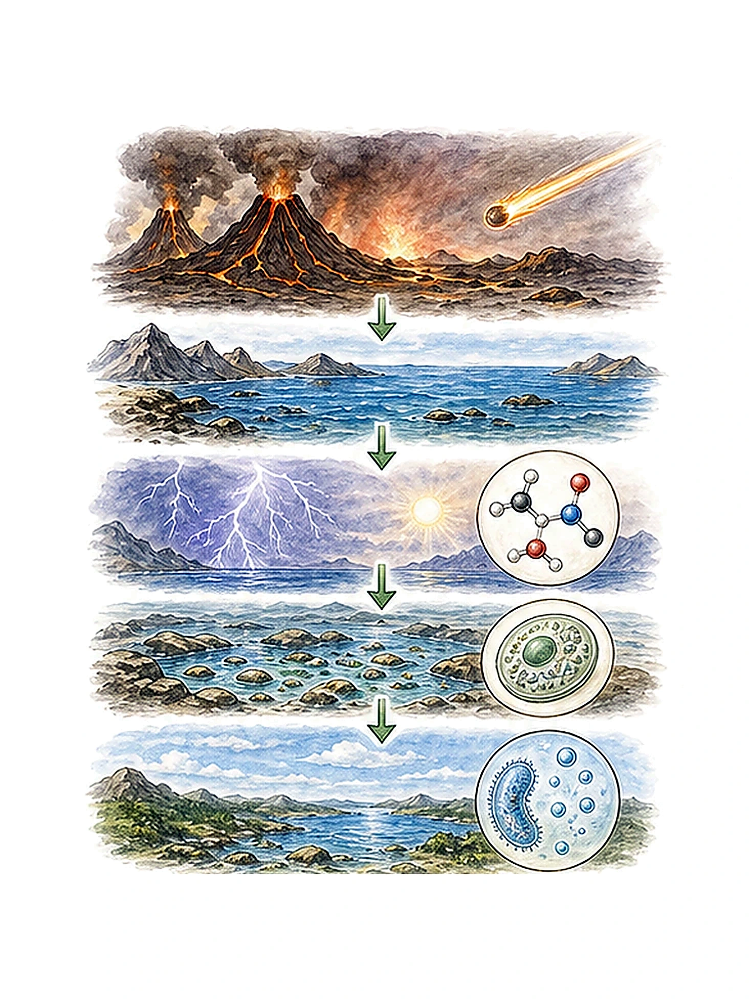
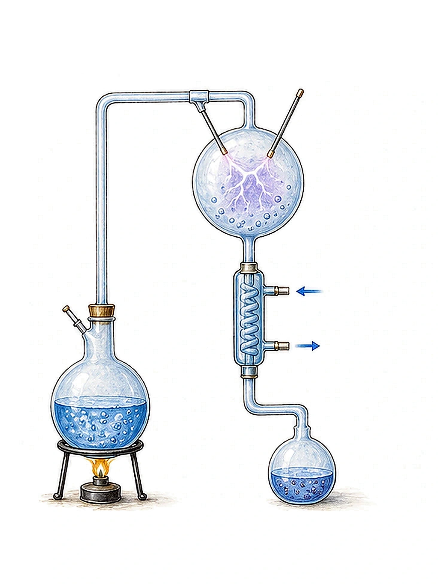
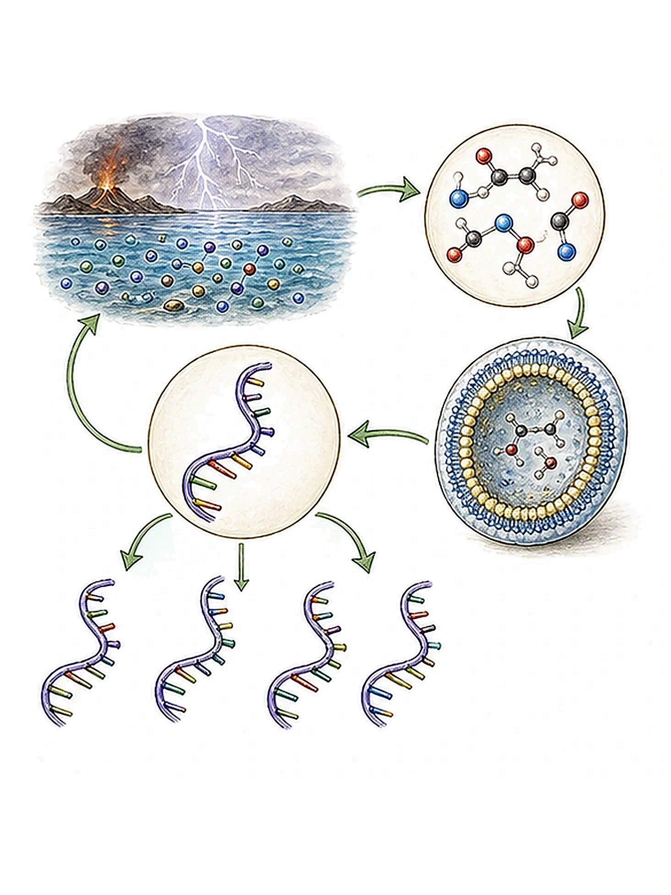
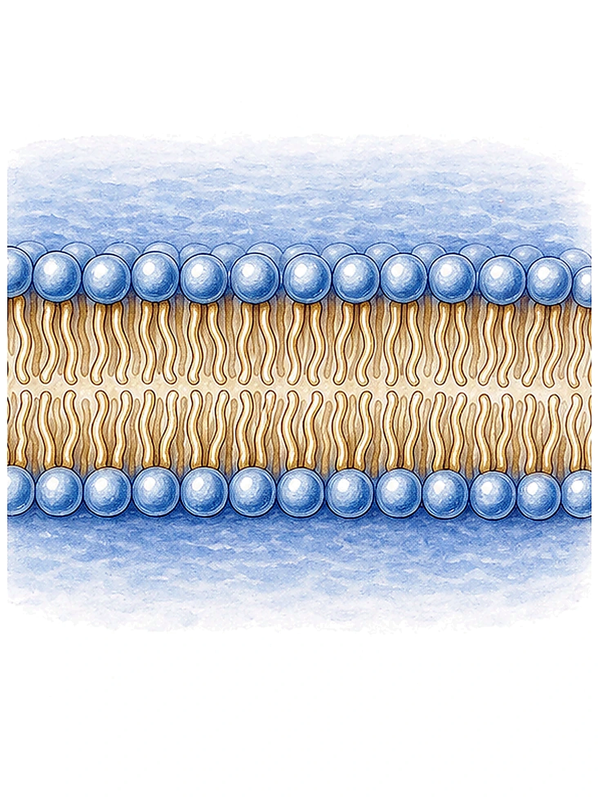
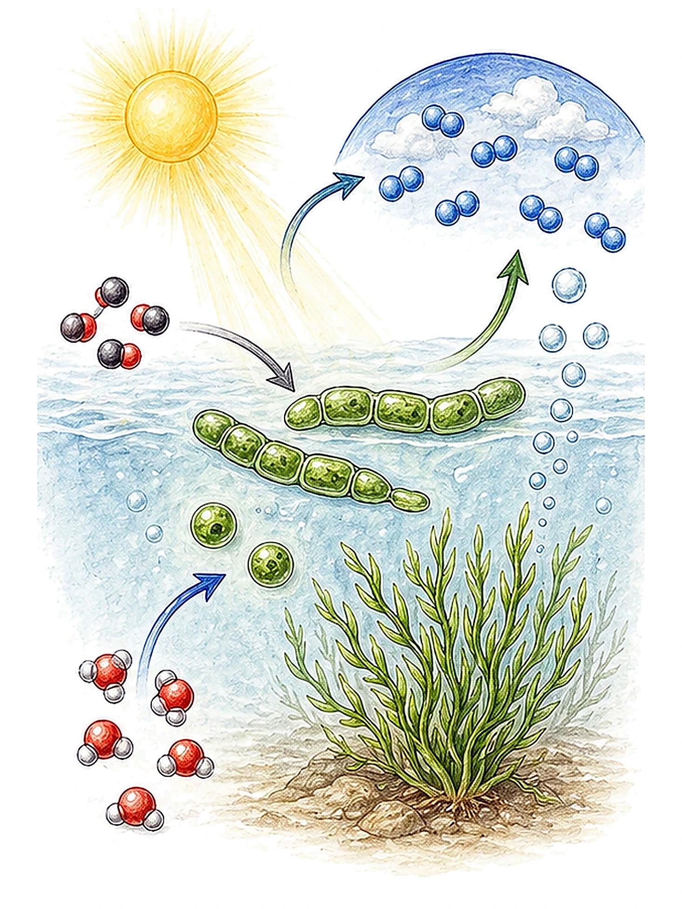
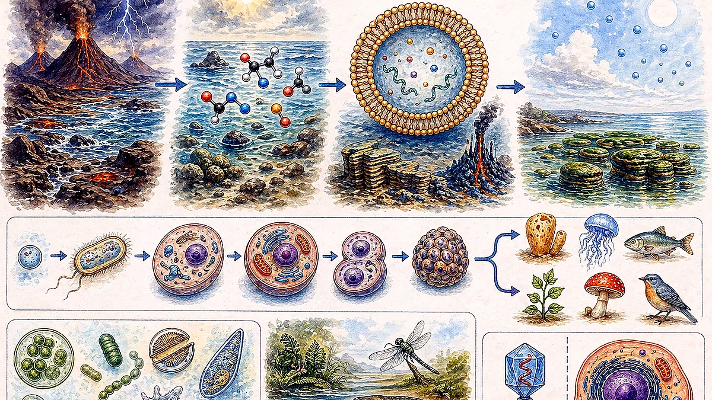
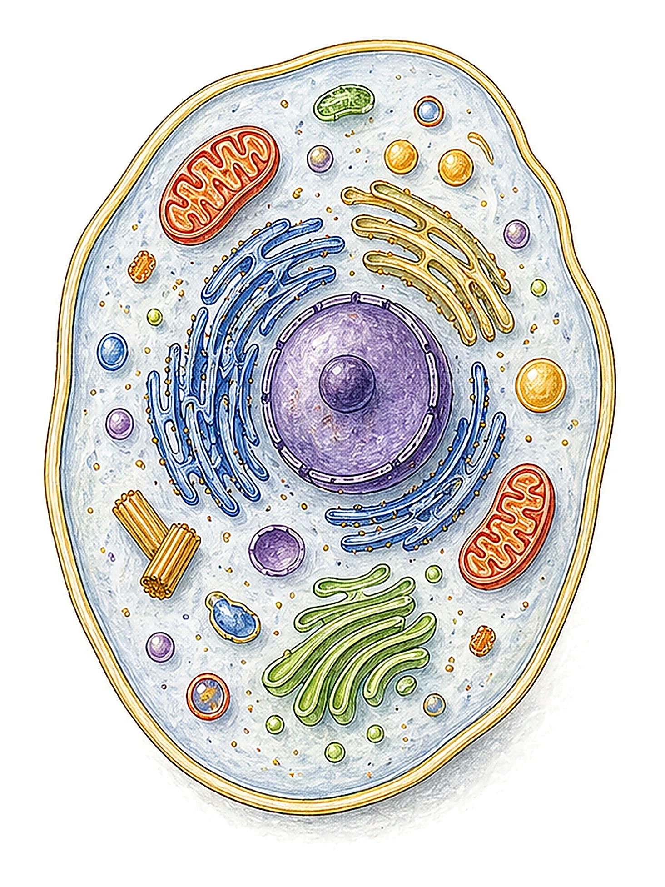
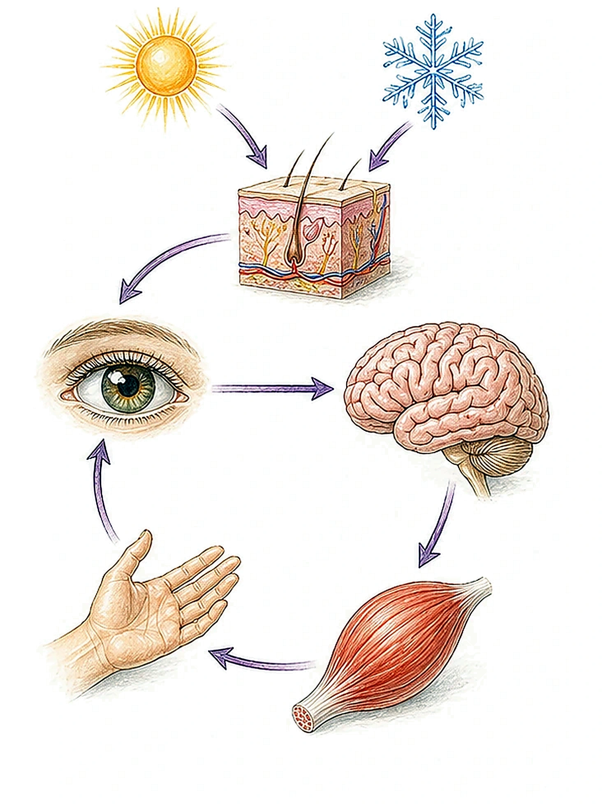
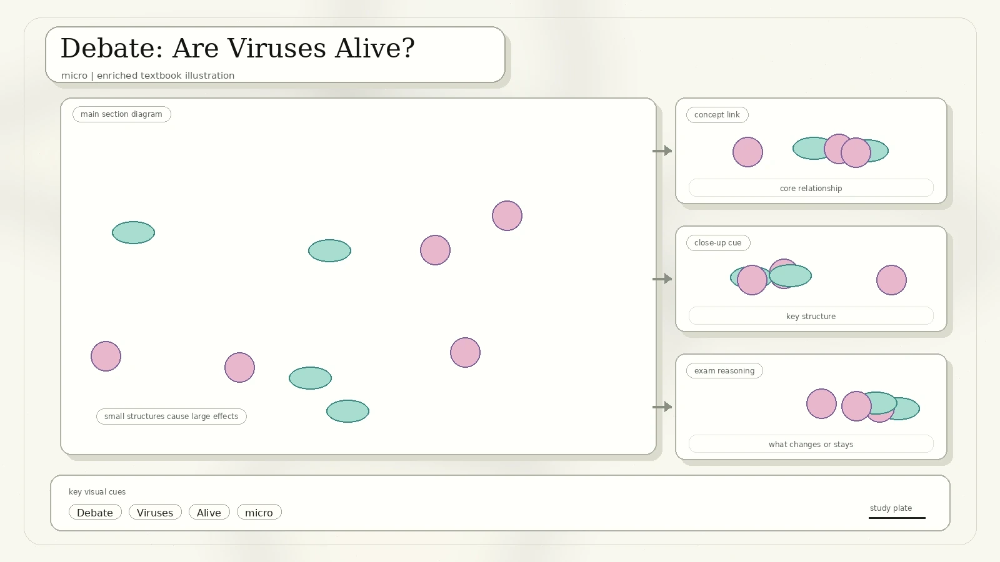

Page-By-Page Source Map
The scanned PDF places two slide pages on most physical pages. This rebuilt lesson keeps the topic order, but groups related slides together so the logic is easier to study.
Living Things; How did life begin?
Toxic planet, cooling oceans, chemical soup, Miller-Urey.
Building blocks, polymers, RNA world, membranes.
Hydrothermal vents, first physical evidence, cyanobacteria.
Photosynthesis changed Earth; RNA world multiple-choice question.
Biology, cells, nutrition, respiration, excretion.
Growth, movement, reproduction, sensitivity, adaptability, constant state.
Are viruses alive? Review questions from the original handout.
How Did Life Begin?
The source begins carefully: nobody knows exactly where and how life began. Earth has changed so much that direct evidence of the earliest steps is incomplete. Scientists therefore compare several models and ask which parts are supported by chemistry, geology, fossils, and modern biology.
Exam lens: Treat origin-of-life ideas as hypotheses and models, not as a single memorized story. The strongest answers mention evidence and limitations.

The scan compares early Earth to a hot toxic planet, with gases from volcanoes and deadly radiation.
As Earth cooled, water vapor condensed and rained down, forming oceans where chemistry could continue.
The source notes that life could have stopped and started several times before stable survival conditions existed.
Chemical Soup And The Miller-Urey Idea
The handout explains the chemical soup model: elements needed by life were present on early Earth, but in a different mixture from today's atmosphere. Energy from lightning or volcanic activity could drive reactions that form simple organic compounds, which then wash into oceans and react further.

What The Scan Wants You To Know
- Life probably began in the oceans.
- Living things require carbon, hydrogen, nitrogen, oxygen, phosphorus, and sulphur.
- Energy could drive reactions that make building blocks for life.
- Miller-Urey demonstrated that some life-related organic molecules can form under prebiotic-style conditions.
Important Limitation
The experiment does not prove exactly how life started. It supports a smaller claim: early-Earth-like chemistry can generate some organic building blocks. That is why origin-of-life models still need membranes, information storage, energy use, and self-copying chemistry.
From Molecules To First Cells
The Oparin-Haldane model in the PDF describes a gradual route from inorganic molecules to organic building blocks, polymers, self-copying molecules, and cell-like compartments. The RNA world hypothesis adds a key idea: early RNA may have both stored information and catalyzed reactions.

Simple organic molecules such as amino acids can combine to make larger biological polymers.
RNA is important because it can carry genetic information and, in some cases, catalyze reactions.
Fragile self-copying molecules need a boundary so useful products stay together.
Phospholipid Membranes: The First "Skin"

The scan calls this "growing a thick skin." A phospholipid has a polar head and hydrophobic tails. In water, many phospholipids naturally arrange into bubbles or bilayers. That gives early chemistry a compartment: useful molecules are kept close together instead of drifting away.
A membrane alone is not life, but it is a crucial step toward a cell because a cell must separate itself from the environment while still exchanging materials.
Deep Sea Vents, Stromatolites, And Oxygen
Life may have begun around ocean-floor vents where heated, mineral-rich water supplied energy for chemical reactions.
The source identifies stromatolites as early physical evidence for cell formation, about 3.5 billion years old.
Stromatolites are built by mats of cyanobacteria. Their photosynthesis helped oxygenate the atmosphere.

Photosynthesis did more than feed organisms. Over long periods, it raised oxygen levels, changed the chemistry of the atmosphere and oceans, and made complex oxygen-using life more likely. This is why the scan says photosynthesis "turned Earth green" and enabled complex life to prosper.
Biology Is The Science Of Life
Biology asks what life is, how living things differ from non-living things, how many kinds of organisms exist, how organisms function, where they live, and how they interact with other organisms and surroundings.

Life is recognized by a full set of characteristics, not one feature alone.
Classification and biodiversity help organize the huge variety of organisms.
Cells, nutrition, respiration, excretion, and coordination keep organisms alive.
Ecology studies organisms in their habitats and interactions.
What Do Living Things Have In Common?
The scan lists ten features. Non-living things may show one or two of these, but they do not possess the full set. That is the key idea for exam questions.
Cells are the basic units of living organisms. Unicellular organisms have one cell; multicellular organisms have many specialized cells.
Organisms need food or raw materials for energy, growth, and repair. Plants make food by photosynthesis.
Respiration releases usable energy from food substances for cell activities.
Excretion removes metabolic waste products made by chemical reactions in cells.
Growth increases size and mass; development changes form and structure.
Organisms can move by themselves. Animals, bacteria, and plants can all show movement.
Reproduction makes new copies of organisms and prevents a species from disappearing.
Sensitivity is the ability to detect and respond to changes in the environment.
Adaptations help organisms survive. Many adaptations develop over generations.
Living organisms maintain balance inside their bodies, such as body temperature around 36.5 degrees C.
Cells: The Basic Unit

The PDF labels a nucleus as a control centre, cytoplasm as watery material, and the cell membrane as a skin that encloses cytoplasm. We can add one helpful idea: the membrane is not just a wrapper. It controls exchange with the environment, which is essential for nutrition, respiration, excretion, and homeostasis.
Respiration Is Not The Same As Breathing
| Process | What it means | Where it happens | Why it matters |
|---|---|---|---|
| Breathing | Moving air in and out of the lungs. | Respiratory organs. | Exchanges oxygen and carbon dioxide with the outside air. |
| Cellular respiration | Breaking down food molecules to release energy. | Cells, especially mitochondria in aerobic respiration. | Provides ATP energy for cell activities. |
| Anaerobic respiration | Releasing energy without oxygen. | Cytoplasm. | Produces less ATP and may form ethanol, lactic acid, or other products depending on organism. |
Movement, Response, And Homeostasis

Common trap: Movement does not always mean walking or running. Bacteria can move with flagella, plants can coil tendrils or close traps, and cells can move materials internally.
Debate: Are Viruses Alive?
The source answer is subtle: a virus is not a living thing, but a life-like entity on the border between living and non-living worlds. This is a good place to apply the full-set rule for life characteristics.

| Evidence that seems life-like | Evidence against calling viruses living organisms |
|---|---|
| Viruses contain genetic material such as DNA or RNA. | They are not made of cells. |
| They can evolve by mutation and natural selection. | They do not carry out independent metabolism. |
| They can make more viruses inside a host cell. | They cannot reproduce independently without hijacking host machinery. |
Review And Source References
Check Yourself
- Why is the origin of life treated as a set of models rather than one settled story?
- What did the Miller-Urey experiment show, and what did it not prove?
- Why is RNA important in the RNA world hypothesis?
- How could phospholipid membranes help self-copying molecules survive?
- How did photosynthesis change the history of life on Earth?
- List the characteristics of living organisms from the scan.
- Explain the difference between breathing and cellular respiration.
- Why are viruses described as life-like but not living?
Answers To The Scan's Wrap-Up
Multiple-Choice Check From The Scan
Which best describes the RNA World Hypothesis?
Video Links Printed In The Scan
- The Mysterious Origins of Life on Earth: printed as a YouTube reference in the source scan.
- Introduction to Photosynthesis: printed as a YouTube reference in the source scan.
- What do Biologists do?: printed as a YouTube reference in the source scan.
Rebuilt from the Week 03 scanned PDF, IMG_20260427_0003.pdf. The diagrams are newly drawn in HTML/SVG to make the original scanned ideas easier to read and revise.